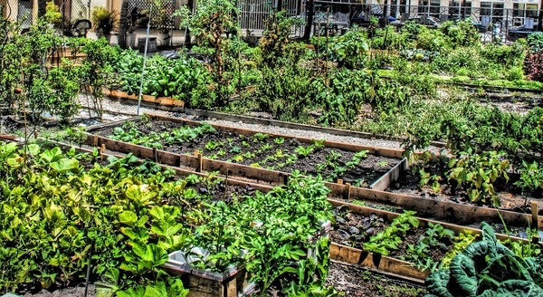

Lead Story: Community Garden Expands

New greenhouse built by volunteers – March 2025
After 6 months of fundraising, the community garden in Mokhotlong now has an accessible greenhouse. Weekend workshops start April 5.
- Sign up at community centre (or online form)
- Attend one orientation (every Tuesday 5:30 PM)
- Choose your plot – organic seeds provided